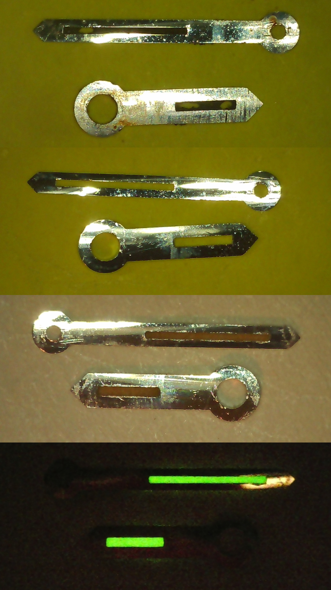
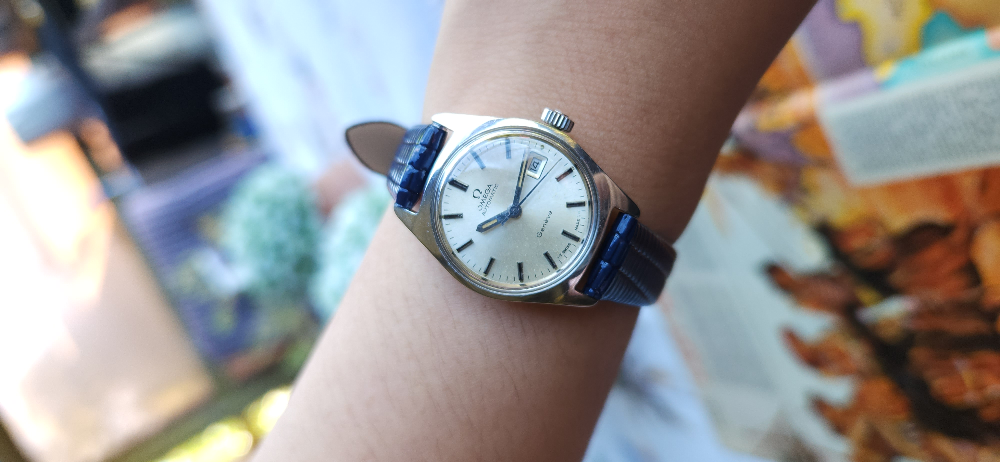

Omega Ladies
Zenith Calibre 2572
A vintage Zenith automatic movement brought in for mechanical servicing and restoration.
About the Project
This Zenith Calibre 2572 was brought in for a mechanical service and restoration. The movement was carefully inspected before being completely disassembled so that the individual components could be cleaned, examined and assessed for wear.

Restoration
Attention was given to the external components and overall presentation of the watch. The aim was to restore the timepiece while retaining the character and appearance of the original watch.
The Finished Watch

The completed Omega Ladies was returned to service following its mechanical overhaul and restoration. The finished movement was tested and regulated to ensure reliable operation.